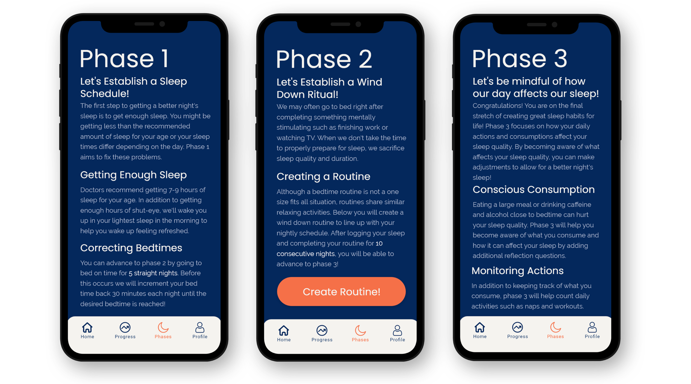
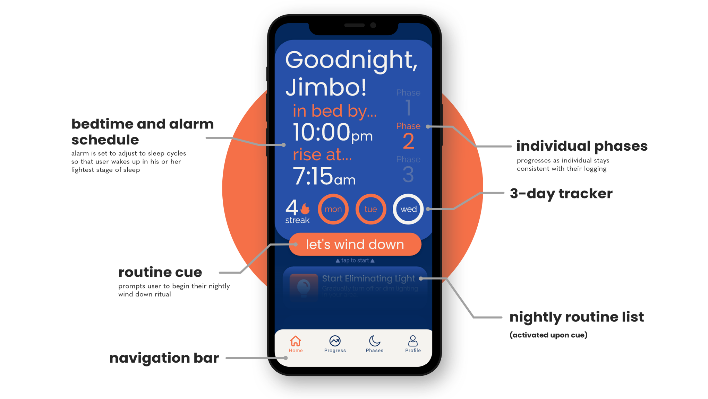
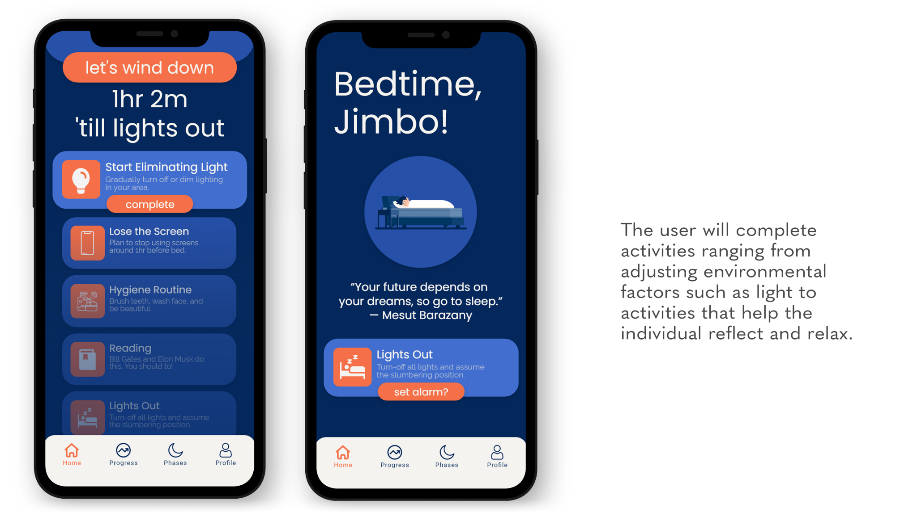
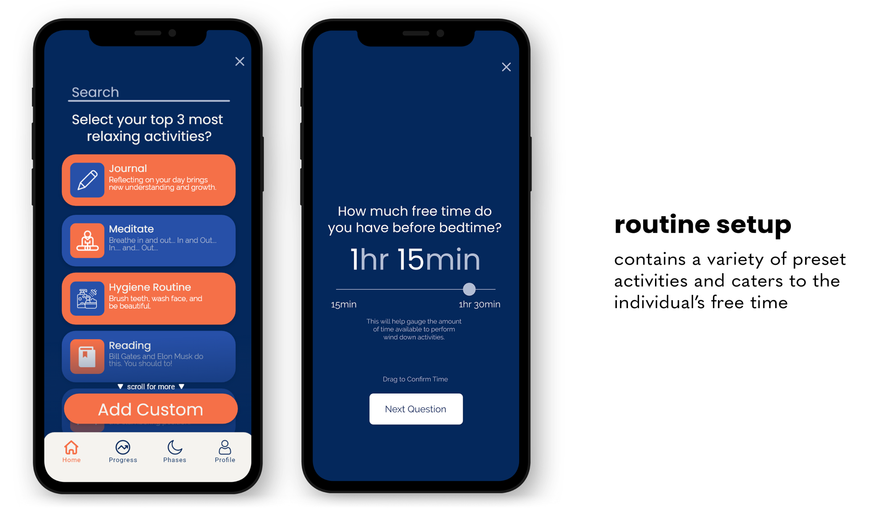
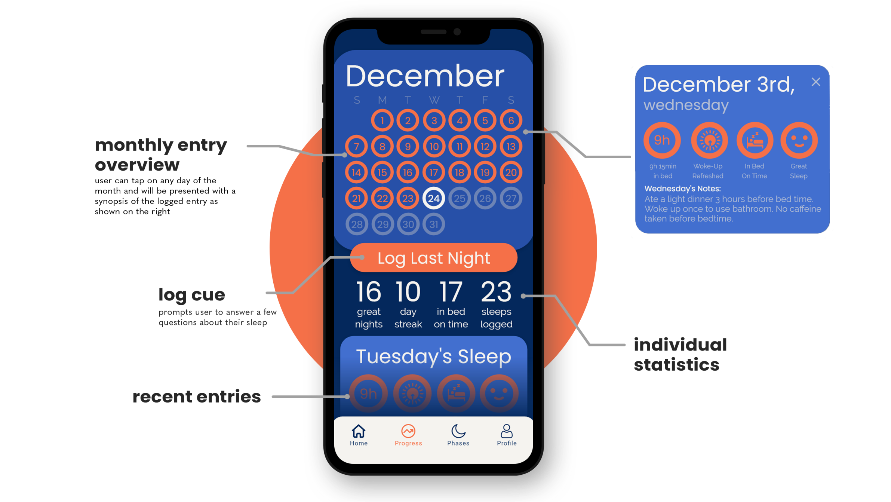
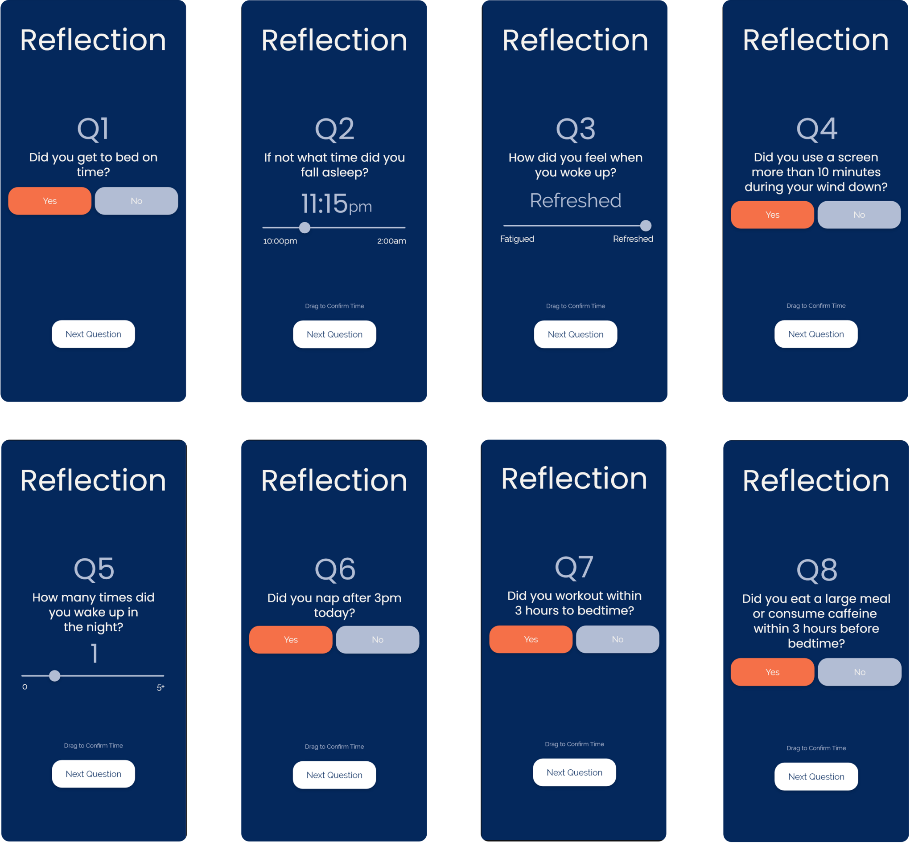
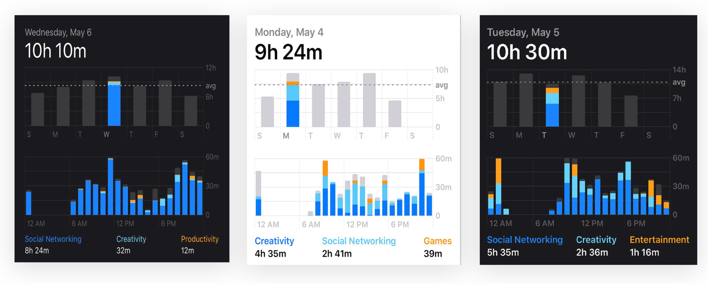
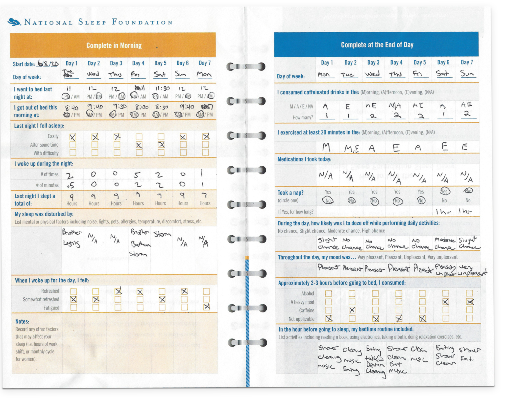
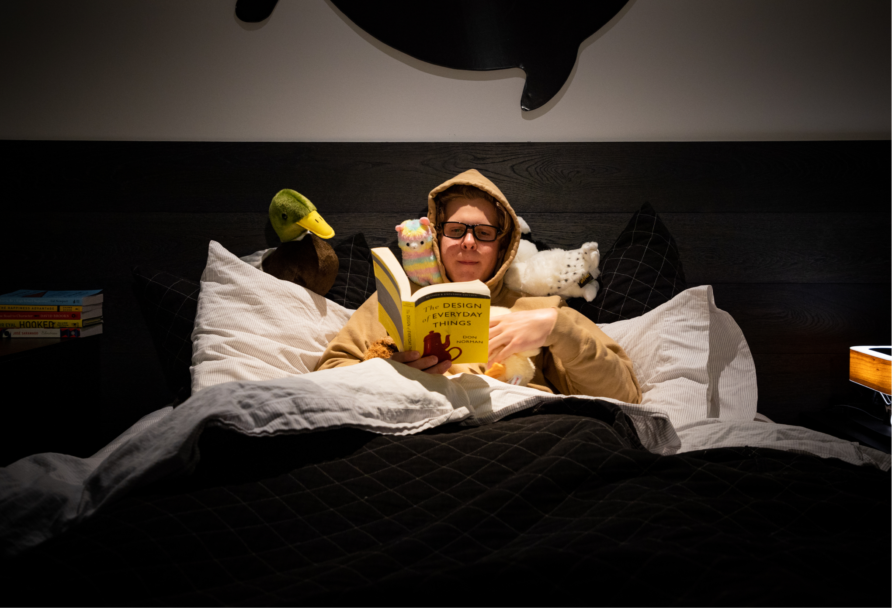

Summer 2020
Wind Down
Sleep app designed to better improve rest through currated wind down routines.
Product Design and Management
The Problem
One of the easiest ways to stay healthy is to get enough sleep every night. For adults, this is between 7-9 hours and for teenagers, is around 9 hours. A good nights rest is important for neural function and restoration as well as metabolic health.
With all of this in mind, 85% of teenagers and 35% of adults do not get enough sleep every night. Sleep deprivation is a slippery slope that has been linked to many health risks. In teenagers and children, lack of sleep negatively impacts behavior, mood, weight, and overall cognitive ability. Sleep deprivation in adults has been linked to increased risk of diabetes and heart disease.
Challenge and Opportunity
How can we help individuals create lasting, healthy sleep habits?
Product Overview
Wind Down is a sleep app designed to better improve rest through currated wind down routines.
Like the Moon (& Teenagers), It Has Phases
Wind Down revolves around 3 progressions with each phase focusing on bettering one aspect of sleep. As one stays consistent with their tracking and/or routines, they will be able to unlock the next phase.
Meet Your Sleep Center
The dashboard was designed with purpose to focus on each individual phase. For instance, phase #1 will not have routines unlocked. Instead, it will focus on easing back the users bedtime. Phases #2 and #3 will look similar as the difference is shown in the progress tab.
Your Choice of a Healthy Routine
After phase #1 is complete, Wind Down allows the user build a nightly routine. The routine will help the individual ease in a slumbering state through relaxing activities.
 This Isn’t Tracking, It’s Reflecting
A key component of Wind Down is the progress section. Here, the user will be able to log how they slept and view completed nights. Once the individual sees the correlation between proper sleep habits and feeling energized the next day, he or she will become more likely to stick with their routine.
 The user will answer a set of questions upon returning to the app to reflect on his or her sleep. Questions 1-5 will be answered during phase #1 and #2 . The addition of 6-8 will be answered in phase #3.
Case Study
In the Spring of 2020, I set out to correct my peer's sleeping habits through designing a solution to aid bedtime routines. What you see below is the culmination of my thinking.
Rest Inhibitors
We need to understand why individuals do not get enough sleep. The problem can be attributed firstly to biweekly sleep schedule changes such as staying up later on the weekends. Changes in sleep patterns often leave individuals drowsy during the day. Next, social and scholarly obligations such as homework, sports, and social gatherings may lead to non-beneficial bedtimes. Lastly, circadian theme disruptions such as use of screens before bed, poor eating habits, lack of exercise, etc. all decrease overall sleep quality.
Sleep and Surveys
Due to the nature of this project being done during the COVID-19, I had to get creative with my researching strategies. During my first attempt to survey my peers (mostly high school and college students), I had come up with 5 polls aimed to understand their sleep habits.
Sleep Talking
Keeping my findings from the sleep apps in mind, I reached out to a handful of those who took the survey get a better understanding of how their nights unfolded. After these talks, I became aware that these individuals had a lot in common. For instance, they all had heavy screen usage before going to bed and throughout the day, most of them only went to sleep when they were either bored or too tired to watch a screen, and all of them did not have an established wind down routine.
These are screentimes of a few individuals
Goals for the Solution
1. Get individuals to bed a given hour consistently.
2. Improve overall quality of sleep.
Improving Current Solutions
Currently, sleep apps focus primarily on tracking the user’s sleep. After exploring and testing apps such as “Sleep Cycle” and “Sleep Watch”, the only feature I found beneficial was the sleep trend tracker. The apps tested were somewhat able to accomplish goal #1 if the user was disciplined. In addition, the apps did little improve the user’s quality of sleep.
Testing Implemented Methods
After working on the app design, I thought it might be helpful if I was to complete a mock-up of the sleep tracker. To accomplish this, I used the National Sleep Foundation’s sleep diary because it was able to focus on the habits and the sleep quality of the individual. Then, I challenged my friend with terrible sleeping hygiene to complete the week-long diary. Once the week was over, I found that the diary along with a few guidelines such as a fixed bedtime and a nightly routine had greatly improved my friend’s sleep quality and mood throughout the day.
Final Thoughts On Wind Down
Although Wind Down is just a concept, I believe it provides a great example on how a product such as an app can improve the health of its users. Through listening to others and properly validating assumptions with research and empathy, products are able to transform the user for the better. As much as it is important to make a profit by holding on to the user for as long as possible, I intend Wind Down to be deleted once the user has completed every phase. An individual should not be chained to application, but instead, the individual should take what he or she learned to continue an established habit on their own.
